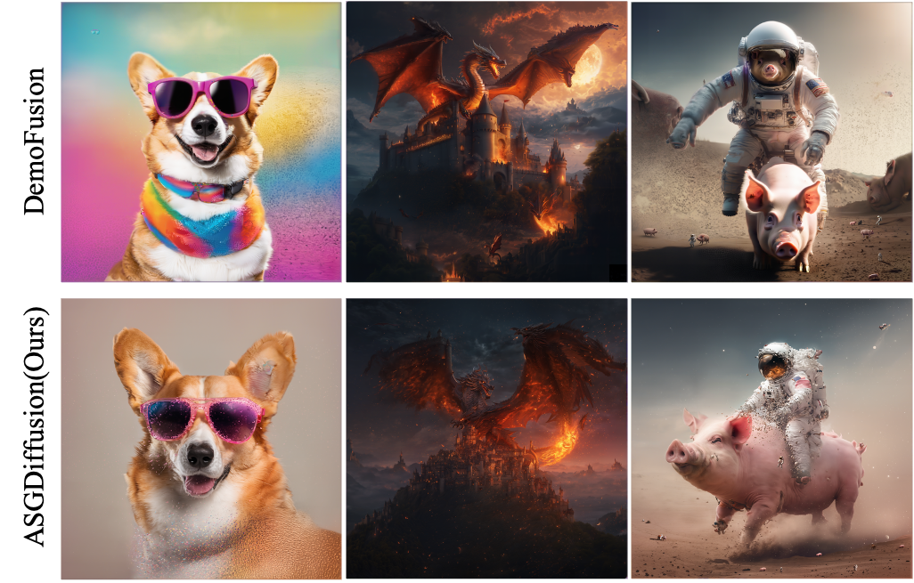

We thank all reviewers for their constructive feedback and positive remarks, including the novelty of our method, convincing ablation studies, state-of-the-art performance, and the clarity of our writing.
Additional Baseline Comparisons
Reviewer 1 & 2: We appreciate the suggestion to include "ResMaster" for comparison. Since its code is not publicly available, direct experiments are not possible. However, we will discuss its contributions in the revised manuscript. Additionally, comparisons with three other baselines are provided in the anonymous link.


High-Resolution Artifacts Across Architectures
Reviewer 2: Our method operates at the latent level, making it compatible with various diffusion architectures like UNet and DiT. We demonstrate high-resolution generation results for both UNet-based and DiT-based architectures, showing ASGDiffusion effectively mitigates pattern repetition and maintains global semantic consistency.


Higher Resolution Comparison (4096×4096)
Reviewer 2: ASGDiffusion synthesizes high-resolution images by stitching together patches from the Latent Diffusion Model (LDM). As resolution increases, more patches are required, leading to weaker pixel interaction. To address this, a progressive upsampling strategy could be used. We provide higher-resolution visualizations in the anonymous link.
Inference Speed
Reviewer 3: Thank you for your feedback. While our method has slightly longer inference time on a single GPU compared to CutDiffusion, it effectively mitigates pattern repetition. Additionally, our multi-GPU parallelism significantly accelerates inference, making it highly scalable.
The increased single-GPU inference time mainly stems from computing the Cross-Attention Mask at every denoising step. To address this, we propose a novel solution: adopting Classifier-Free Guidance (CFG) as Mask. Our recent research shows that CFG can replace the Cross-Attention Mask while maintaining strong performance with negligible computational cost.


More Results
Reviewer 1: Due to submission constraints, some high-resolution details were not fully visible. Here we present additional examples showcasing our method's ability to preserve textures and reduce pattern repetition. These results demonstrate the effectiveness of our approach in maintaining both global semantic consistency and local detail preservation.